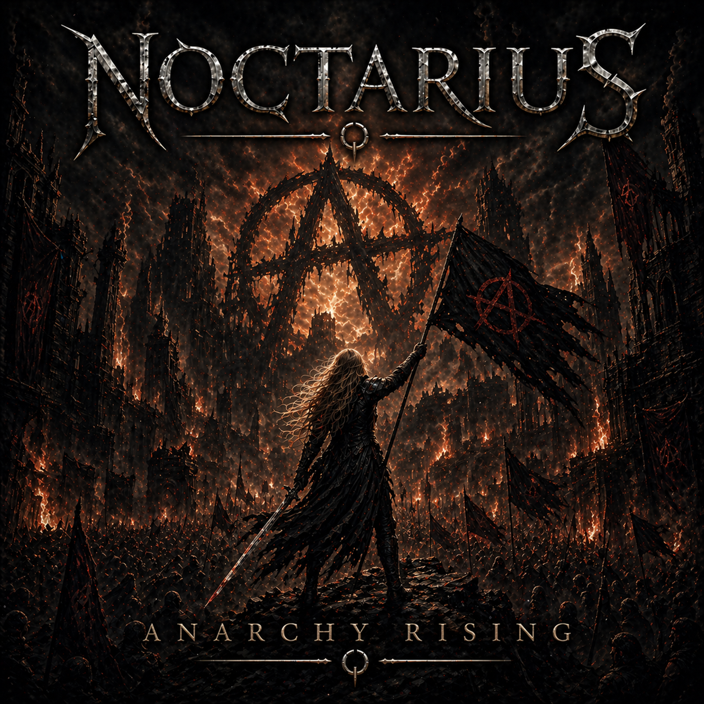

NOCTARIUS
Anarchy Rising

A Symphony of Ashes
Chains on the streets, laws made of lies,
Kings on their thrones feeding off our lives.
Paper crowns, hollow words,
Built on fear, control and nerves.
You preach order, I see decay,
Your justice rots, your truth’s a play.
We’re done obeying broken men,
This is where the fire begins.
Anarchy rising, tearing it down,
No gods, no masters, no thrones, no crowns.
We burn the rules, we own the fight,
Freedom screams in the dead of night.
Anarchy rising — hear the sound,
Of a world reborn from the ground.
Sirens sing, the system shakes,
Concrete cracks with every step we take.
You drew the lines, you built the cage,
We light the fuse, we turn the page.
Your flags don’t speak for me,
Your laws were never liberty.
From the ashes of your control,
We reclaim body, heart and soul.
Anarchy rising, tearing it down,
No gods, no masters, no thrones, no crowns.
We burn the rules, we own the fight,
Freedom screams in the dead of night.
Anarchy rising — hear the sound,
Of a world reborn from the ground.
No saviors coming,
No hands above.
We build tomorrow,
From blood and love.
No chains remain,
No fear inside.
We stand alone,
But unified.
Anarchy rising, louder now,
No mercy left for false vows.
We are the storm, the fault line breaks,
A new world forged in our mistakes.
Anarchy rising — no return,
Watch the old world crash and burn.
No rulers…
No silence…
Only fire and choice.